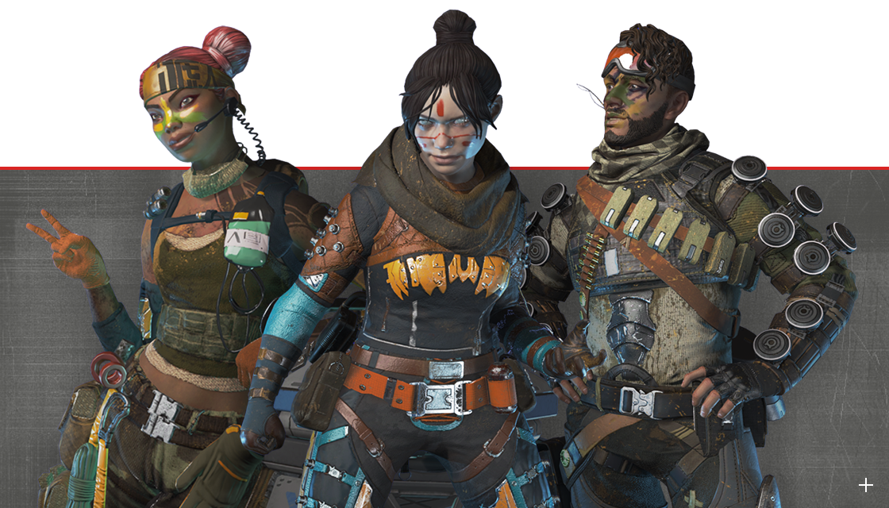
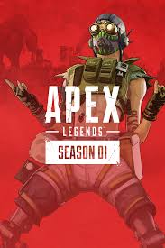
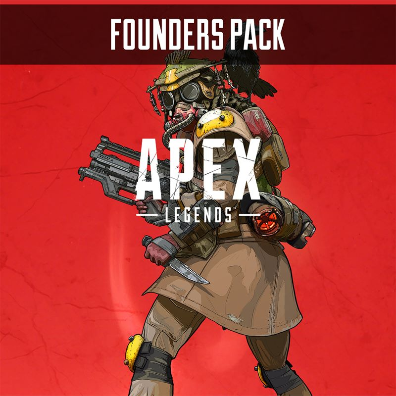
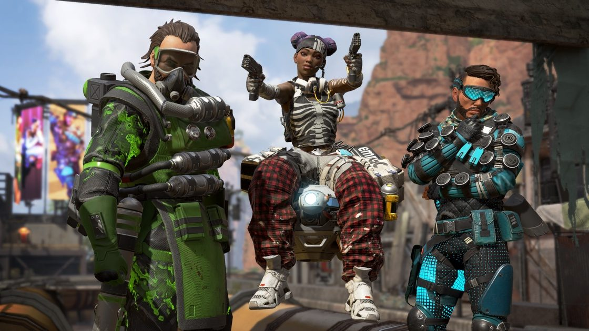
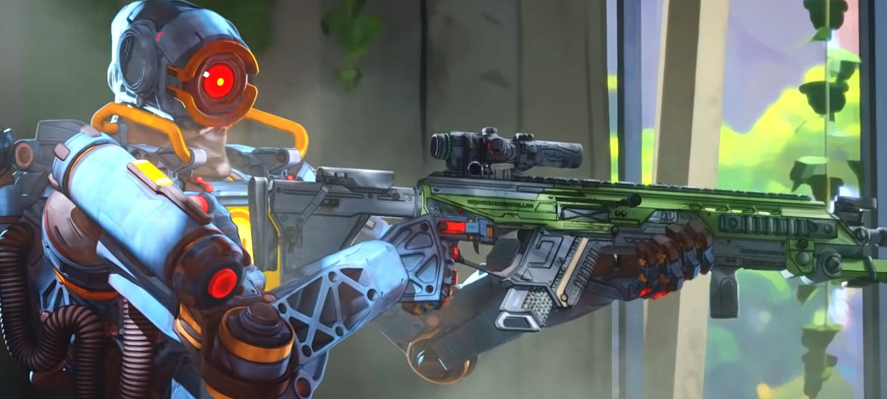
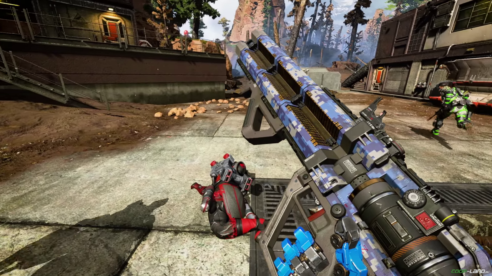

Покажите на что вы способны в Apex Legends — бесплатной игре в жанре «королевская битва», где претенденты со всего Фронтира собираются в команды, чтобы сразиться за славу и богатство.
Откройте для себя растущую коллекцию легендарных бойцов, каждый из которых обладает уникальным характером, способностями, а также преимуществами.
Увидеть всех

Как играть в Apex Legends новичкам?
Базовые механики и советы:
- Урона от падения нет, прыгать можно откуда угодно.
- Начиная перестрелку с противником, вы можете сразу узнать уровень его брони по цвету цифр, которые всплывают при нанесении урона. Если цифры красные, то брони нет, если белые, то броня 1-го уровня, синие 2-го и фиолетовые 3-го. 1-й уровень даёт 2 ячейки щита, каждая из них это 25 единиц, соответственно 2-й уровень даёт 3 ячейки и 3-й четыре.
- Скольжение - важная полезная механика, не стоит о ней забывать. Даже маленький склон, способен ускорить вас. Старайтесь пользоваться им постоянно.
- Скорость передвижения - не зависит от героя, несмотря на габариты они передвигаются с одинаковой скоростью. Однако она может снизиться из-за конкретного оружия в ваших руках. Чем тяжелее оружие, тем медленнее будет бегать герой, причём именно из-за оружия в руках, а не в инвентаре, поэтому освободив руки (клавиша 3) можно ускориться.
- Использовать уступы - то есть залезать на высокие препятствия, то есть стены. Более, того можно залезать на совсем уж отвесные уступы, просто сначала нужно прыгнуть, а потом пробел чтобы залезть.
- Если вас "нокнули" критически подстрелили - ваши жизни не начинают убавляться, как в других подобных играх, вместо этого начинает идти таймер, по истечении которого вы умрёте, оставив вашим тиммейтам возможность вас возродить через жетон. 1 станция - 1 возрождение.
- Десантирование на старте - отцепляйтесь до приземления от команды и садитесь несколько дальше, чтобы собрать больше полезных вещей, нежели, чем вы упадёте все вместе в одно место.
- Скорость при десантировании - направить камеру максимально вниз, так быстрее всего приземлитесь.
- Подбор предметов - игра не даст вам взять предмет, хуже, чем у вас есть (кроме прицелов).
- При смене оружия, все обвесы тоже перемещаются автоматически, лишние обвесы кладутся в инвентарь, а, если в нём нет места, то выпадают на землю.
- Пользоваться метками в игре - можно без голосовой связи указать почти всё, что нужно для взаимодействия с членами команды.




На старте лучше начать с персонажа "Лайфлайн" - есть полезная пассивка, которая ускоряет ваше лечение и реанимацию тиммейта
Плюс при реанимации её робот создаёт щит, не позволяющий противникам вас атаковать.
Второстепенная способность - лечение всех союзников вокруг робота, так, что вы не тратите аптечки. Ну и наконец ультимейт, которые вызывает эйрдроп в указанную точку.
Называю я это эйрдроп, потому что точно такие посылки доставляет в игру и сама игра, только игра это делает в рандомную точку карты находящуюся в зоне. Почему я предлагаю именно этого персонажа?
Новички первое время всегда теряются в игре, а это ведёт к тому, что их сильно атакуют и, при нехватке лечилок, можно очень часто использовать робота для лечения. Ульта поможет получать вещи высокого уровня, пока сам игрок не научился это делать максимально быстро и эффективно.
Выбирать этого персонажа, пока не освоите базовые основы игры, а потом непременно нужно переходить к остальным, чтобы знать чего ждать от каждого из них.

Наиболее эффективное оружие
- Стволы в игре достаточно равномерно распределены по силе и другим характеристикам и наносят примерно одинаковый урон.
- Снайперская винтовка "Крабер .50" - выпадает из эйрдропа и наносит просто космический урон. Но взять её сложно, поэтому выберем из того, что есть под ногами.
- Штурмовые винтовки, пистолеты и пулемёты в целом схожи между собой по силе и там выбор особо не решает. Правда выделяется револьвер "Ведомый" при тонком освоении которого, можно отвешивать хорошие хедшоты.
- А вот в дробовиках, пистолетах-пулемётах (ПП) и снайперках, можно отметить по одному образцу, которые существенно выделяются из всех оружий своего класса.
- ПП "Ищейка" - стреляет тяжёлыми патронами, её минус он не автоматический и стреляет очередями по 5 патронов. Но, как только вы находите спец. модуль на данное оружие оно превращается в имбу, с которой можно в соло класть вражеские отряды. Спец. модуль делает ищейку автоматической.
- Снайперка "Тройной эффект" - выпускает сразу 3 патрона, можно даже убить несколько противников находящихся рядом или просто наносить тройной урон вплотную. Опять же, если найти модуль улучшения, то по урону она становится, как вышеупомянутый "Крабер .50". Её улучшение даёт возможность зажимать кнопку прицеливания и выпускать выстрел тройной силы в одну точку.
- Из дробовиков хвалят "Мастифф" и "Миротворец", последний я подбирал чаще всего и считаю его очень хорошим выбором на ближних и средних дистанциях. Даже, без спец модуля, данный дробовик, является лучшим вариантом среди своего вида. Но по мере прокачки миротворца, ситуация колоссально меняется в ещё лучшую сторону и этим дробовиком можно играть и на средних дистанциях. С помощью обвесов мы можем начинать заряжать свой выстрел, выпустив который, мы отправим настолько кучную дробь, что её можно назвать охотничьей пулей. Если такая попадёт в голову 100% противник либо потеряет всё здоровье и защиту либо сразу же упадёт. Несомненно чтобы раскрыть хоть как-то потенциал этих стволов, нужно учиться хоть сколько-нибудь метко стрелять.

Оживлённые места на карте
Воздушный корабль на который можно приземлиться вначале и найти хороший лут, но это, как локация "Школа" а PUBG, туда прыгают многие и выжить там достаточно трудно.
То есть на старте освоения игры старайтесь прыгать подальше от своего самолёта и, где меньше всего людей.


{kind=link}